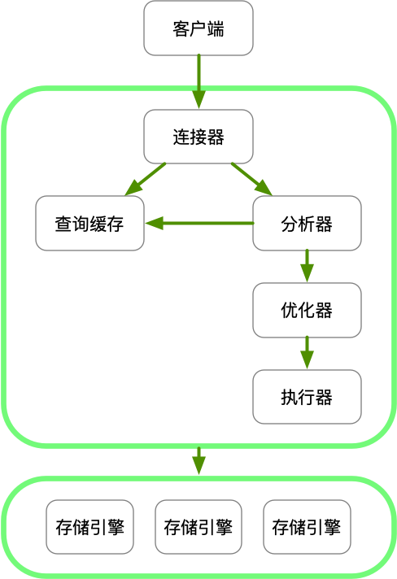

当你执行一条SQL语句的时候，经过的MySQL组件有（未必是先后顺序）：客户端（你）、连接器、查询缓存、分析器、优化器、执行器、存储引擎。它们的职责是：
Server层：
- 连接器：管理连接，权限验证。
- 查询缓存：故名思义，如果命中则直接返回结果
- 分析器：词法分析、语法分析
- 优化器：生成执行计划，索引选择
- 执行器：操作引擎，返回结果
存储引擎层：
- 存储引擎：存储数据，提供读写接口。存储引擎有多种选择，比如InnoDB（默认）、MyISAM（旧）、Memory。各有各的特性。

连接器
- 管理连接：
show processlist可以看到当前连接的情况。如果连接长时间没有动静则会断开，默认8小时，由wait_timeout参数控制。 - 权限验证：客户端连接时先做认证（用户名密码对不对），然后查询出你所拥有的权限，之后这个连接的权限判断逻辑依赖于此时获得的数据。即连接创建之后的权限变更不会影响之前创建的连接。
连接占用内存，MySQL执行过程中临时占用的内存绑定在连接上，只有当连接断开才会释放。解决办法：
- 定时断开连接。
- 执行完占用大内存的查询后断开连接。
- 执行完占用大内存的查询后，执行mysql_reset_connection来初始化连接资源（不会断开）。
查询缓存
在8.0里去掉了这个，因为这个查询缓存基本上没什么用处，理由：
- 缓存失效太平凡，只要对表有更新，就会失效
- 同时导致缓存命中率太低
分析器
识别你的SQL语句，判断是否符合MySQL语法。做词法分析。也可判断表名、列名是否合法。
优化器
决定用哪个索引，在Join的时候决定表的连接顺序，最终确定执行方案。
执行器
判断你对表T的操作权限。根据表定义的存储引擎调用引擎的接口。